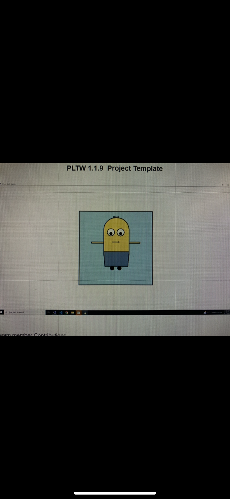

Portfolio
Home
Portfolio
About Me
This is my Portfolio Page!
This is the Minion Creator. You will get questions that will allow you to make your minion. You will be able to chose things like its height and how much eyes it has.

1.2.5 Project. In this project, my team and I created a leaderboard, functions, while loops, if statements, and variables to create an interactive Snake game.

This is picture of the Scratch prgram I have created. It is a complex game that allows the creature to jump over multiple potion bottles at a time.

3.2.4 Graph

Using App Inventor to make app game Duck Hunter.
Interactive Fiction Rags to Riches.
Black Jack game written in Python.
Modified bits in pictures.
Use data files to create graphs.
Using netlogo do remix of illusions.
Interactive Fiction Rags to Riches.